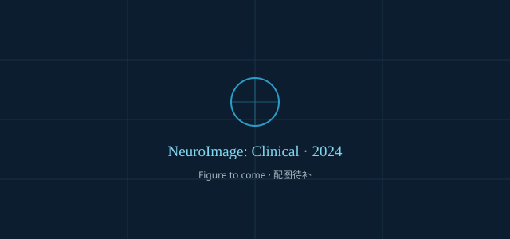
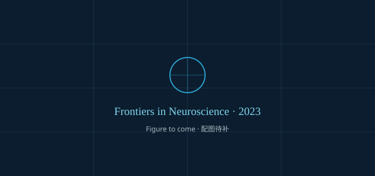
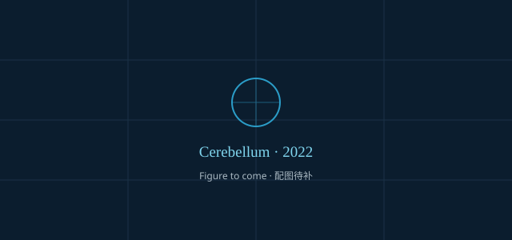
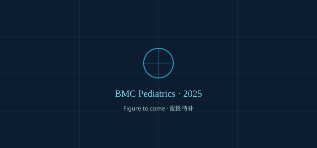

按应用领域 · 02
脑科学
定量神经解剖与临床神经 AI：覆盖数千受试者的海马精细形态学、小脑三维重建、类淋巴通路流体运输建模、基于 MRI 的临床诊断。进行中：呼吸与睡眠分析、脑电（EEG）分析、经颅多普勒（TCD）脑血流评估。
综述
定量神经解剖与临床神经 AI：覆盖数千受试者的海马精细形态学、小脑三维重建、类淋巴通路流体运输建模、基于 MRI 的临床诊断。进行中：呼吸与睡眠分析、脑电（EEG）分析、经颅多普勒（TCD）脑血流评估。
- 多数据集 2,911 名受试者的海马精细形态学
- 小脑重建被审稿人评为"非凡的技术成就"
- 类淋巴通路建模获 NeuroImage 封面亮点
08 · 代表工作
代表工作
每张卡片：上方配图，下方要点。
01

Fine hippocampal morphology analysis with a multi-dataset cross-sectional study on 2911 subjects
NeuroImage: Clinical · 2024
- 多数据集 2,911 名受试者的海马精细形态分析。
- 群体层面的精细解剖变异制图。
02

Fine Scale Hippocampus Morphology Variation Cross 552 Healthy Subjects from Age 20-80
Frontiers in Neuroscience · 2023
- 20–80 岁健康人全生命周期的形态学变异。
- 为衰老与神经退行性疾病研究提供参考数据。
03

Three-dimensional digital reconstruction of the cerebellar cortex: Lobule thickness, surface area measurements and layer architecture
Cerebellum · 2022
- 皮层分层水平的小脑三维数字重建。
- 审稿人评价："总体而言，这是一项非凡的技术成就。"
04

Cerebrospinal and interstitial fluid transport via the glymphatic pathway modeled by optimal mass transport
NeuroImage · 2017
- 以最优质量传输建模类淋巴通路的脑脊液与组织间隙液运输。
- 获 NeuroImage 封面亮点。
05

Diagnosing acute bilirubin encephalopathy in neonates using MRI-based deep learning model
BMC Pediatrics · 2025
- 基于 MRI 深度学习的新生儿急性胆红素脑病诊断。
- 为时间敏感的新生儿疾病提供决策支持。
06

Relationship between the volume of ventricles, brain parenchyma and neurocognition in children after Hydrocephalus treatment
Child's Nervous System · 2025
- 脑积水治疗后脑室与脑实质体积的定量分析。
- 将影像测量与儿童神经认知结局相关联。
07

The bumps under the hippocampus
Human Brain Mapping · 2018
- 刻画海马下方的精细齿状解剖结构。
- 后续精细形态学研究的解剖学基础。
08

Respiration, sleep, and EEG analysis ｜ 呼吸、睡眠与脑电分析
Ongoing work · 2026
- 呼吸与睡眠分析、脑电（EEG）分析。
- 经颅多普勒（TCD）脑血流评估。
进行中